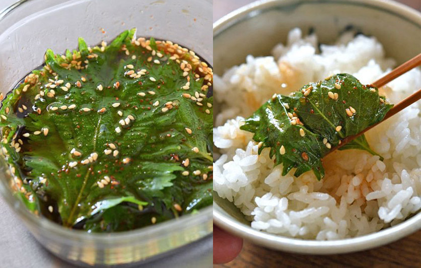

Pickled Shiso Leaves (大葉の醤油漬け)

Description
Less of a "pickle" and more a "get in my mouth" recipe, these tangy, salty, and herbal-y ōba leaves are the perfect summer snack. When ready, place a stack on a plate and serve with rice, dried fish, nattou, or sashimi. Use your chopsticks to drop a leaf over some rice and "scoop" it into a bite-sized pillow of deliciousness. Best enjoyed on hot days with a cold beer.
Ingredients
- 20 shiso leaves ("ōba" - washed dried and stems cut) • 大葉 20枚ほど
- 1 clove grated garlic • おろしにんにく 1-2㎝
- 1 tsp sesame seeds • 白いりごま 小さじ1
- 1 tsp sugar • 砂糖 小さじ1
- 1/5 tsp salt • 塩 小さじ1/5
- 1/6 tsp chili or cayenne powder • 一味唐辛子 好みで小さじ1/6ほど
- 2.5 tbsp soy sauce • 醤油 大さじ2と1/2
- 1.5 tbsp sesame oil • ごま油 大さじ1と1/2
- 1 tbsp mirin (rice wine) • みりん 大さじ1
Steps
- Mix all marinade ingredients together using a fork or whisk. Use a bowl that pours well. Feel free to adjust marinade ingredients to your taste! Consider adding some fresh finely minced chile for heat, or maybe a dash of rice vinegar or grapefruit juice for zing.
- Pour a small amount of the marinade into a pyrex bowl with a lid. Place a single leaf into the marinade, and pour a few drops of the marinade onto the leaf. Continue until all leaves are stacked in the bowl and each leaf is fully coated in marinade.
- Cover and refridgerate. It's ready in an hour, but I think it tastes best about 12-24 hours later.
Back to Index